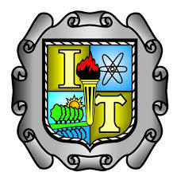

Principios Eléctricos y Aplicaciones Digitales, es una asignatura que aporta al perfil del
Ingeniero en Sistemas Computacionales conocimientos y habilidades básicas para
identificar y comprender las tecnologías de hardware, aplicando teorías para la solución de
problemas que engloben escenarios de circuitos digitales.
Para integrarla se ha hecho un análisis de las asignaturas de Física General, identificando
los temas de Electrodinámica, Electrostática, y Matemáticas Discretas, identificando los
temas de Lógica Matemática y Algebra Booleana, aportando herramientas en el quehacer
profesional del Ingeniero en Sistemas Computacionales.
Puesto que esta asignatura dará soporte a otras más, como lo son, Arquitectura de
Computadoras, Lenguajes de Interfaz, Sistemas Programables, Fundamentos de
Telecomunicaciones, se inserta en la primera mitad de la trayectoria escolar, antes de cursar
aquellas a las que dará soporte. De manera particular, lo trabajado en esta asignatura se
aplicará a temas tales como: Programación de Microcontroladores, Programación de
Interfaces hombre-máquina y en la selección de componentes para el ensamble de equipos
de cómputo.
